<!DOCTYPE html>
<html lang="en">
    <head>
        <meta charset="UTF-8">
        <meta http-equiv="X-UA-Compatible" content="IE=edge">
        <meta name="viewport" content="width=device-width, initial-scale=1.0">
        <meta name="description" content=" Report to the 20th National Congress of the Communist Party of China
    October 16, 2022
    ">
        <meta property="og:title" content=" ">
        <meta property="og:description" content="
        <meta property="og:image" content="https://studiomeal.com/wp-content/themes/studiomeal2021/images/ogimage.png">
        <title>WeNeverLie</title>
       <link rel="stylesheet" href="wenverlie.css">
       <link rel="preconnect" href="https://fonts.googleapis.com">
       <link rel="preconnect" href="https://fonts.gstatic.com" crossorigin>
       <link href="https://fonts.googleapis.com/css2?family=Cormorant+Garamond:ital,wght@0,300;1,300&family=Imbue:wght@100&family=Lora:ital@1&family=Oswald:wght@700&display=swap" rel="stylesheet">
    </head>

    <style>

body {
        color:rgb(25, 43, 67);
        background-image: url("/images/bg/tommesfranx_photo_of_a_microphone_1940s_style_close_up_no_backg_9d20b8a1-8831-49cb-ad0c-9d234c53e36a.png");
        background-size: cover;
        background-repeat:no-repeat;
        background-position: center;
        

      }


h2{
    font-family: 'Oswald', sans-serif;
}

h3{
    font-size: 10px;
}

        .container {
  display: flex;
  height: 800px; /* Adjust the container height as needed */
}

p{
    font-size: 80px;
}

.column1 {

  overflow-y: auto;
  width: 10%;
  position: relative;
  height: 400px;
  float: left;
  border: 1px solid #ff6700;
}

.column2 {
  flex: 1;
  overflow-y: auto;
  margin-left: 0px;
  margin-right: 0px;
  width: 80%;
  position: relative;
  float: left;
  border: 1px solid #ff6700;
}


.side-bar-right{
    position: fixed;
    right: 0;
    top: 11px;
    width: 10%;
    border: 1px solid #ff6700;
    
}

footer{
    clear: both;
    font-family: 'Lora', serif;
    text-align: center;
    height: 20px;
    position: absolute;
    top: 150%;
    left: 50%;
    transform: translate(-50%, -50%);
    width: 20%;
    background-color: yellow;
}

    </style>


    <body>

        <div class="background-image">
       

        <div class="header">
            <h1 class="animate" style="font-size: 200px;"><a style="font-size: 120px;"><a href=home_love_peace_truth.html target="_blank" style="text-decoration: none;"> Hold High the Great Banner of Socialism with Chinese Characteristics and Strive in Unity to 
                Build a Modern Socialist Country in All Respects &#20;  
                </h1></a></a>
        </div>


<div class="container">

        <div class="column1">
            <ul><h3>
                <li><a href="#ccp" style="text-decoration: none;">the Communist Party of China</a></li>
                <li><a href="#20thcongress"style="text-decoration: none;">20th National Congress</a></li>
                <li><a href="#newjourney"style="text-decoration: none;">on a new journey </li></a>
                <li><a href="#jiankangma" style="text-decoration: none;"> modern socialist country</li></a>
                <li><a href="#DigitalTotalitarianism" style="text-decoration: none;">socialism with Chinese characteristics</li></a>
                <li><a href="#baizhigeming" style="text-decoration: none;"> a New Era</li></a>
                <li><a href="#xitler" style="text-decoration: none;">the great founding spirit of the Party</li></a>
                <li><a href="#censorshipoffilm" style="text-decoration: none;">the great rejuvenation of the Chinese nation</li></a>
                <li><a href="#censoredcovid" style="text-decoration: none;">leadership of the Party</li></a>
                <li><a href="#textbook" style="text-decoration: none;"> leadership of the Central Committee</li></a>
                <li><a href="#building" style="text-decoration: none;"> high-quality development</li></a>
                <li><a href="#cesuogeming" style="text-decoration: none;">whole-process people&#39;s democracy</li></a>
                <li><a href="#fengxian" style="text-decoration: none;">advanced law-based governance</li></a>
                <li><a href="#taiwan" style="text-decoration: none;">advanced socialist culture</li></a>
                <li><a href="#wellbeing" style="text-decoration: none;">public wellbeing </li></a>
                <li><a href="#poverty" style="text-decoration: none;">a critical battle against poverty</li></a>
                <li><a href="#airpollution" style="text-decoration: none">ecological conservation</li></a> 
                <li><a href="#hongkong"style="text-decoration: none">safeguard national security</li></a> 
                <li><a href="#defense"style="text-decoration: none"> national defense </li></a>
                <li><a href="#baiweibing"style="text-decoration: none">the armed forces</li></a> 
                <li><a href="#aigen"style="text-decoration: none">major-country diplomacy with Chinese characteristics on all fronts</li></a>
                <li><a href="#dream" style="text-decoration: none">great new project of Party building</li></a> 
                <li><a href="#70" style="text-decoration: none">the 70th anniversary</li></a>
                <li><a href="#xuexiqiangguo" style="text-decoration: none"> study Party history</li></a>
                <li><a href="#museum"style="text-decoration: none">the Museum of the Communist Party of China</li></a>
                <li><a href="#wall"style="text-decoration: none"> study and apply the great founding spirit of the Party</li></a>
                <li><a href="#ziyouwansui"style="text-decoration: none">create a brighter future </li></a>
                <li><a href="#mission" style="text-decoration: none">the Party&#39;s founding mission with greater resolve and purpose</li></a>
                <li><a href="#fangcang" style="text-decoration: none"> sudden outbreak of Covid-19</li></a>
                <li><a href="#bus" style="text-decoration: none">dynamic zero-Covid policy</li></a>
                <li><a href="#covidsafety" style="text-decoration: none">we have protected the people&#39;s health and safety </li></a> 
                <li><a href="#posters" style="text-decoration: none">made tremendously encouraging achievements</li></a>
                <li><a href="#cityoftears" style="text-decoration: none">turbulent developments in Hong Kong</li></a>
                <li><a href="#guoanfa" style="text-decoration: none">The Law on Safeguarding National Security in the Hong Kong Special Administrative Region </li></a>
                <li><a href="#daqiao" style="text-decoration: none">Guangdong-Hong Kong-Macao Greater Bay Area </li></a>
                <li><a href="#chai" style="text-decoration: none">improving living standards</li></a>
                <li><a href="#stability" style="text-decoration: none">maintaining stability</li></a>
                <li><a href="#onechina" style="text-decoration: none">Taiwan independence</li></a>
                <li><a href="#taiwanex" style="text-decoration: none">external interference in Taiwan affairs</li></a>
                <li><a href="#chinate" style="text-decoration: none">China&#39;s sovereignty and territorial integrity </li></a>
                <li><a href="#unification" style="text-decoration: none">China&#39;s complete reunification </li></a>
                <li><a href="#one-China"style="text-decoration: none"> one-China principle </li></a>
                <li><a href="#out"style="text-decoration: none">drastic changes in the international landscape</li></a>
                <li><a href="#spirit"style="text-decoration: none">a fighting spirit </li></a> 
                <li><a href="#woaini"style="text-decoration: none">we have safeguarded China&#39;s dignity and core interests</li></a>
                <li><a href="#peace"style="text-decoration: none"> pursuing development </li></a>
                <li><a href="#ensuresafety"style="text-decoration: none">ensuring security</li></a>
                <li><a href="#fight"style="text-decoration: none">eradicated absolute poverty </li></a>
                <li><a href="#modern"style="text-decoration: none">a moderately prosperous society </li></a>
                <li><a href="#goal"style="text-decoration: none">completing the First Centenary Goal</li></a>
                <li><a href="#historic"style="text-decoration: none">historic feats</li></a>
                <li><a href="#world"style="text-decoration: none">profoundly influence the world</li></a>
            </ul></h3>
        </div>

        <div class="column2">
                <p>Comrades,<br>
                    On behalf of the 19th Central Committee of 
                    <q class="img_wrapper">
                        <span><span id="ccp"><a>the Communist Party of China (CPC)</a></span></span>
                        <q class="hover_img">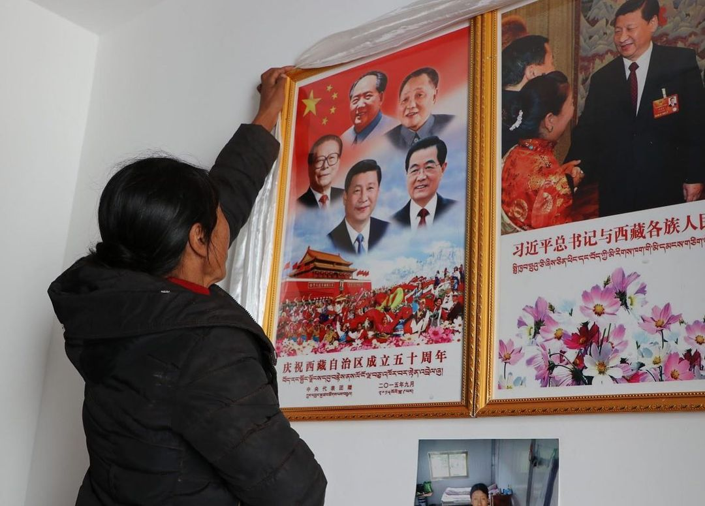</q>
                    </q>
                    
    , I will now deliver a report to 
    <q class="img_wrapper">
        <span><span id="20thcongress"><a>the 20th National Congress</a></span></span>
        <q class="hover_img"><video controls play src="videos/yIa4vpZm5LE4jXLn.mp4"></q>
    </q>.<br>
        
    The 20th National Congress of the Communist Party of China is a meeting of great importance. 
    It takes place at a critical time as the entire Party and the Chinese people of all ethnic groups embark 
    <q class="img_wrapper">
        <span><span id="newjourney"><a>on a new journey</a></span></span>
        <q class="hover_img">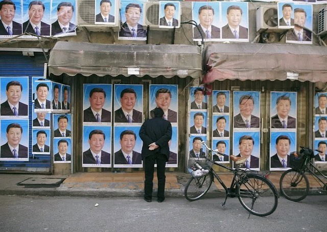</q>
    </q> to build China into <q class="img_wrapper">
        <span><span id="jiankangma"><a>a modern socialist country</a></span></span>
        <q class="hover_img"></q>
    </q> in all respects and advance toward the Second Centenary Goal.<br>
    The theme of this Congress is holding high the great banner of <q class="img_wrapper">
        <span><span id="DigitalTotalitarianism"><a>socialism with Chinese characteristics</a></span></span>
        <q class="hover_img">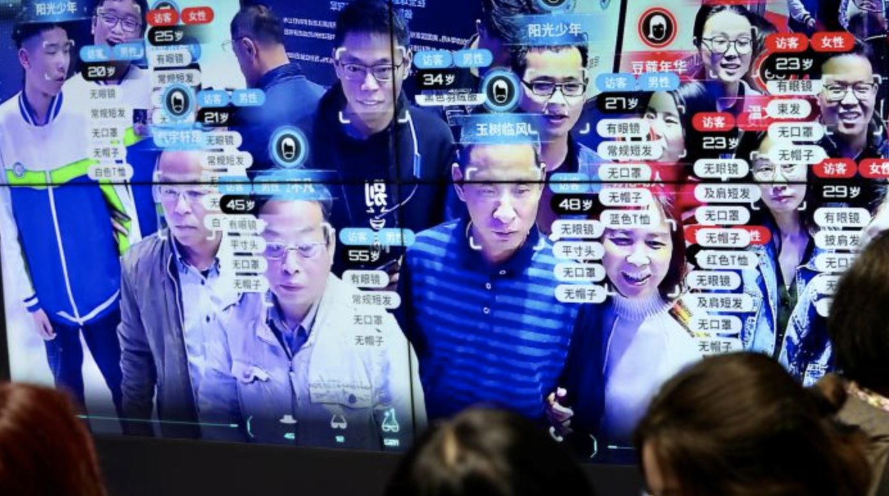</q>
    </q>, 
    fully implementing the Thought on Socialism with Chinese Characteristics for 
    <q class="img_wrapper">
        <span><span id="baizhigeming"><a>a New Era</a></span></span>
        <q class="hover_img">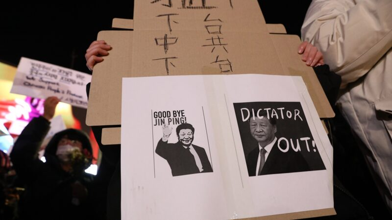</q>
    </q>, 
    carrying forward <q class="img_wrapper">
        <span><span id="xitler"><a>the great founding spirit of the Party</a></span></span>
        <q class="hover_img">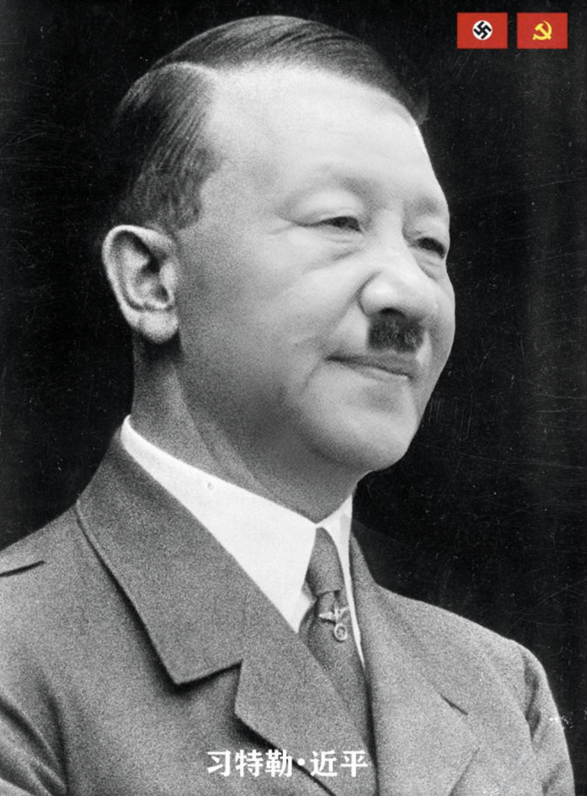</q>
    </q>, staying confident and building strength, 
    upholding fundamental principles and breaking new ground, forging ahead with enterprise and fortitude, 
    and striving in unity to build a modern socialist country in all respects and advance 
    <q class="img_wrapper">
        <span><span id="censorshipoffilm"><a href="https://chinamediaproject.org/2022/06/01/new-licensing-system-for-online-dramas/" target="_blank" style="text-decoration: none;">the great rejuvenation of the Chinese nation</a></span></span>
        <q class="hover_img">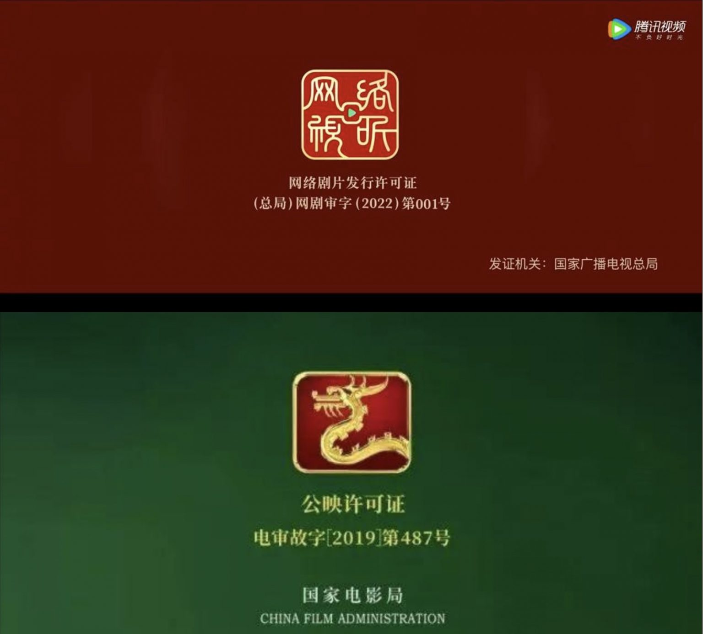</q>
    </q> on all fronts.<br>
    Over the past five years, we have continued to strengthen the overall 
    <q class="img_wrapper">
        <span><span id="censoredcovid"><a>leadership of the Party</a></span></span>
        <q class="hover_img"><video controls play src="videos/Voice from Shanghai Lockdown.mp4"></q>
    </q> and the centralized, unified 
    <q class="img_wrapper">
        <span><span id="textbook"><a>leadership of the Central Committee</a></span></span>
        <q class="hover_img">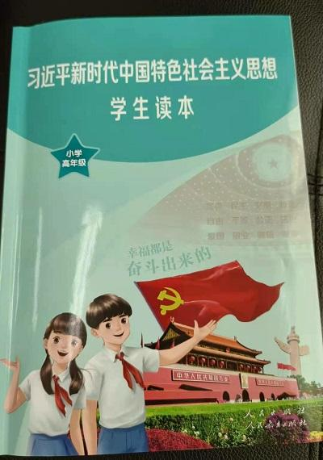</q>
    </q>. 
    We have devoted great energy to finishing building a moderately prosperous society in all respects. We have fully and faithfully applied the new development philosophy on all fronts, 
    focused on promoting 
    <q class="img_wrapper">
        <span><span id="building"><a>high-quality development</a></span></span>
        <q class="hover_img">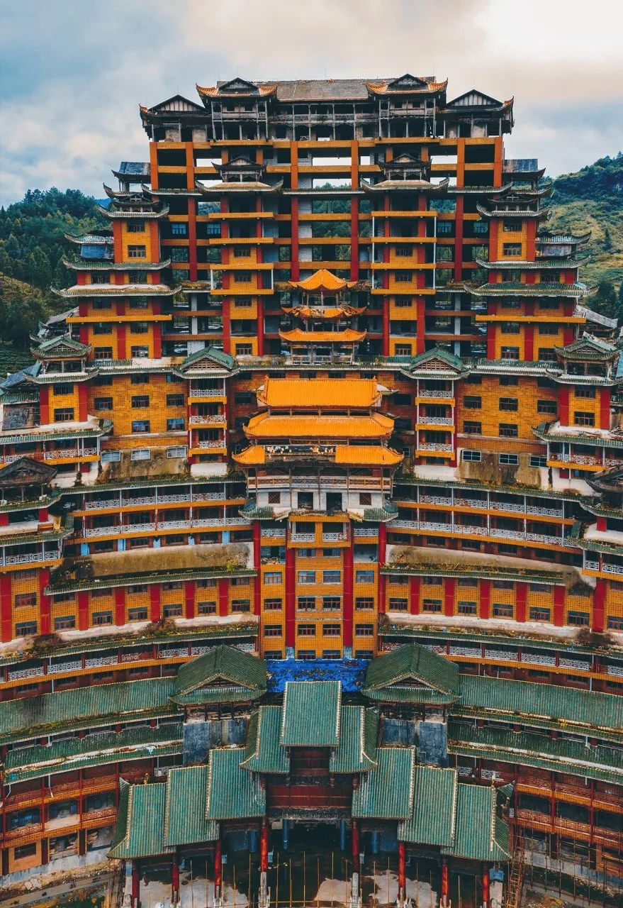</q>
    </q>, and worked to create a new pattern of development. We have pursued reform at a swift and steady pace, made solid progress in developing 
    <q class="img_wrapper">
        <span><span id="cesuogeming"><a href="https://vct.news/news/105ef79f-7ac6-4915-ba84-cefd6d00cc8f" target="_blank" style="text-decoration: none;">whole-process people&#39;s democracy</a></span></span>
        <q class="hover_img">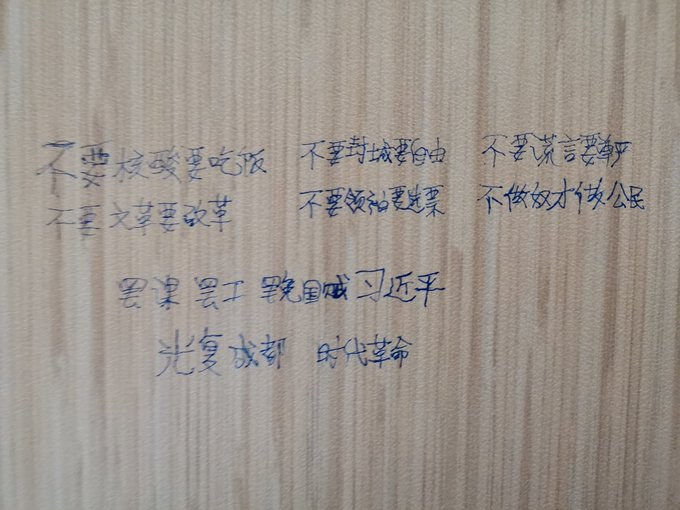</q>
    </q>, 
    and 
    <q class="img_wrapper">
        <span><span id="fengxian"><a href="https://global.chinadaily.com.cn/a/202304/07/WS642fae66a31057c47ebb8e48.html" target="_blank" style="text-decoration: none;">advanced law-based governance</a></span></span>
        <q class="hover_img">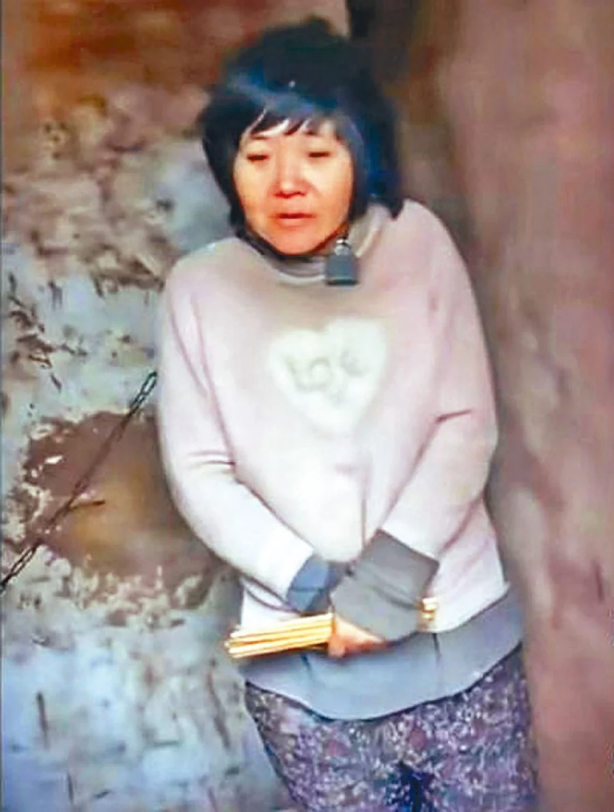</q>
    </q> across all fields of endeavor. We have actively developed  <q class="img_wrapper">
        <span><span id="taiwan"><a href="https://chineseposters.net/posters/e3-748" target="_blank" style="text-decoration: none;">advanced socialist culture</a></span></span>
        <q class="hover_img">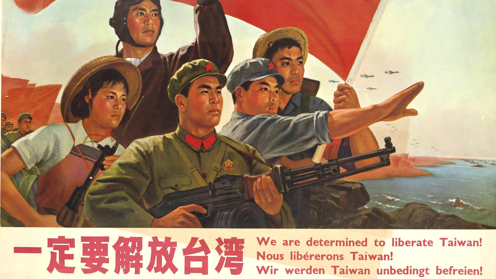</q>
    </q>. We have ensured and improved  <q class="img_wrapper">
        <span><span id="wellbeing"><a href="https://www.rfa.org/mandarin/yataibaodao/jingmao/ql2-01022020065939.html" target="_blank" style="text-decoration: none;">public wellbeing</a></span></span>
        <q class="hover_img">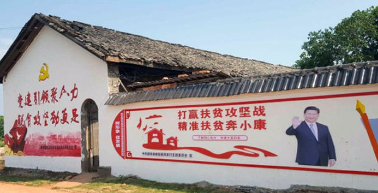</q>
    </q> as a matter of priority and pooled resources to wage <q class="img_wrapper">
        <span><span id="poverty"><a href="https://edition.cnn.com/2019/04/19/asia/poverty-alleviation-2020-xi-jinping-intl/index.html" target="_blank" style="text-decoration: none;">a critical battle against poverty</a></span></span>
        <q class="hover_img">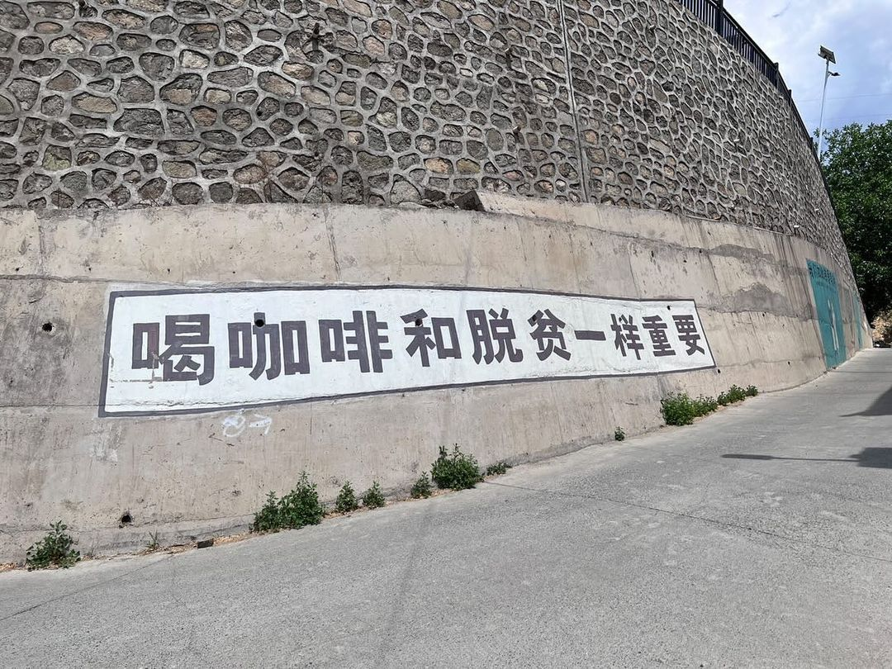</q>. 
    We have made a big push to enhance <q class="img_wrapper">
        <span><span id="airpollution"><a>ecological conservation</a></span></span>
        <q class="hover_img">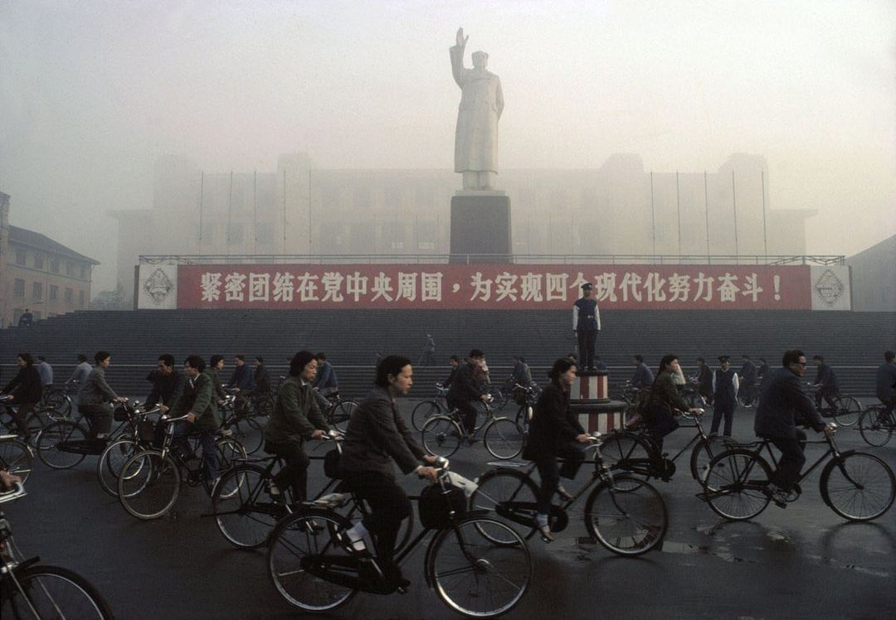</q>. We have worked with firm resolve to  <q class="img_wrapper">
            <span><span id="hongkong"><a href="https://en.wikipedia.org/wiki/2019%E2%80%932020_Hong_Kong_protests" target="_blank" style="text-decoration: none;">safeguard national security</a></span></span>
            <q class="hover_img">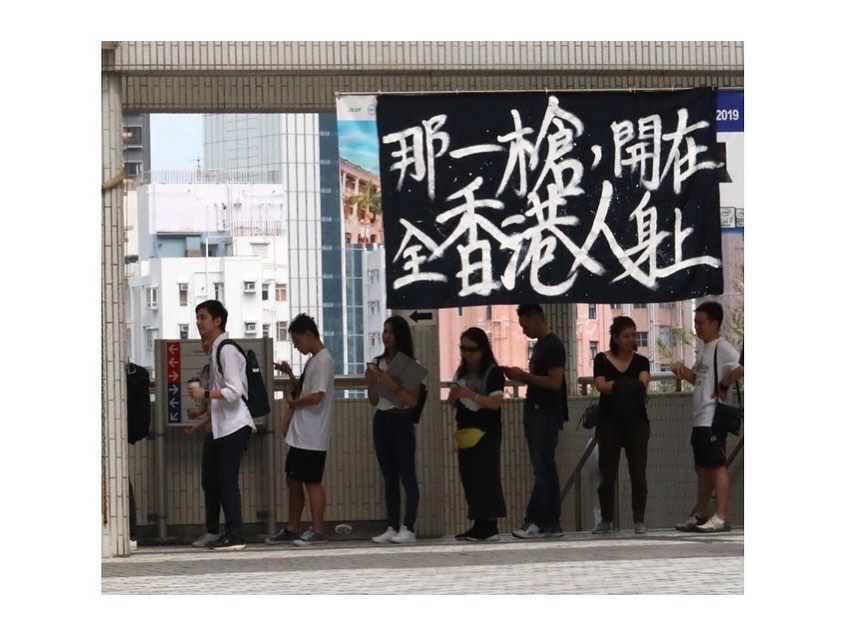</q>, defended off and defused major risks, and ensured social stability. We have devoted great energy to modernizing our <q class="hover_img"></q>. We have worked with firm resolve to  <q class="img_wrapper">
                <span><span id="defense"><a href="https://japan-forward.com/chinas-white-paper-revolution-protests-what-you-should-know/" target="_blank" style="text-decoration: none;">national defense</a></span></span>
                <q class="hover_img">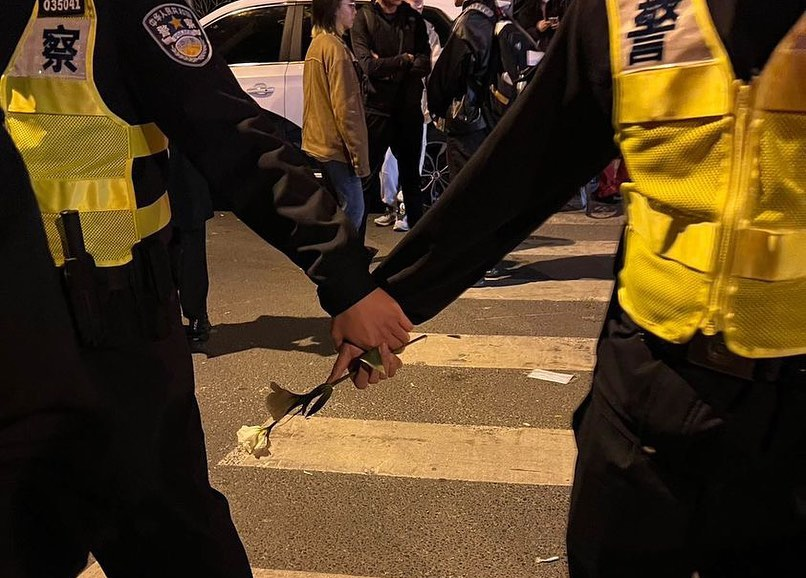</q> and <q class="img_wrapper">
                    <span><span id="baiweibing"><a href="https://www.newsweekjapan.jp/satire_china/2022/04/post-74.php" target="_blank" style="text-decoration: none;">the armed forces</a></span></span>
                    <q class="hover_img">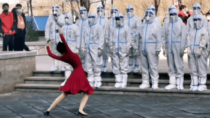</q>
                </q>. 
    We have conducted <q class="img_wrapper">
        <span><span id="aigen"><a style="text-decoration: none;">major-country diplomacy with  Chinese characteristics on all fronts</a></span></span>
        <q class="hover_img"></q>
    </q> . And we have made sweeping efforts to advance <q class="img_wrapper">
        <span><span id="dream"><a href="dream.html" style="text-decoration: none;">the great new project of Party building</a></span></span>
        <q class="hover_img"></q>.<br>
	We celebrated the centenary of the Communist Party of China and<q class="img_wrapper">
        <span><span id="70"><a href="https://www.bbc.com/news/world-asia-china-49808078" target="_blank" style="text-decoration: none;">the 70th anniversary</a></span></span>
        <q class="hover_img">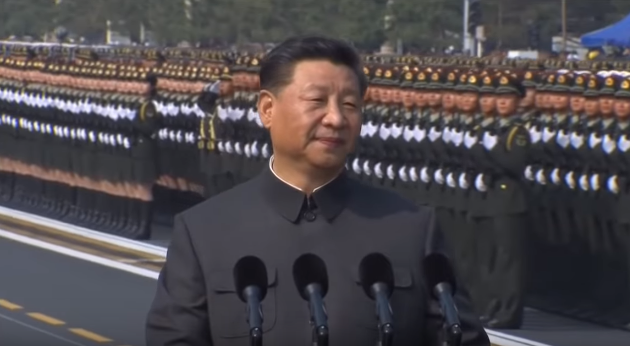</q> of the founding of the People&#39;s Republic of China. We adopted the third resolution concerning <q class="img_wrapper">
            <span><span id="xuexiqiangguo"><a href="xuexiqiangguo.html" style="text-decoration: none;">the Party&#39;s history</a></span></span>
            <q class="hover_img"></q>, organized Party-wide activities to study Party history, 
    and inaugurated <q class="img_wrapper">
        <span><span id="museum"><a href="http://www.xinhuanet.com/english/2021-06/22/c_1310021844.htm" target="_blank" style="text-decoration: none;">the Museum of the Communist Party of China</a></span></span>
        <q class="hover_img">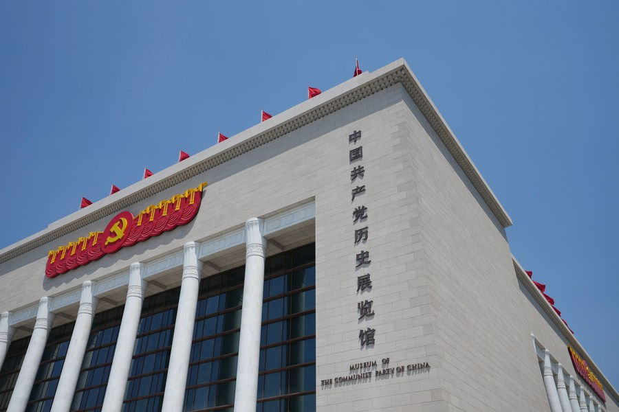</q>
    </q> . We called upon all Party members to <q class="img_wrapper">
        <span><span id="wall"><a style="text-decoration: none;">study and apply the great founding spirit of the Party</a></span></span>
        <q class="hover_img">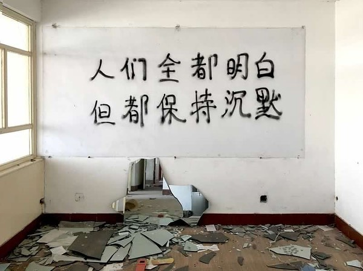</q>
    </q> , and we encouraged them to <q class="img_wrapper">
        <span><span id="ziyouwansui"><a style="text-decoration: none;">create a brighter future</a></span></span>
        <q class="hover_img">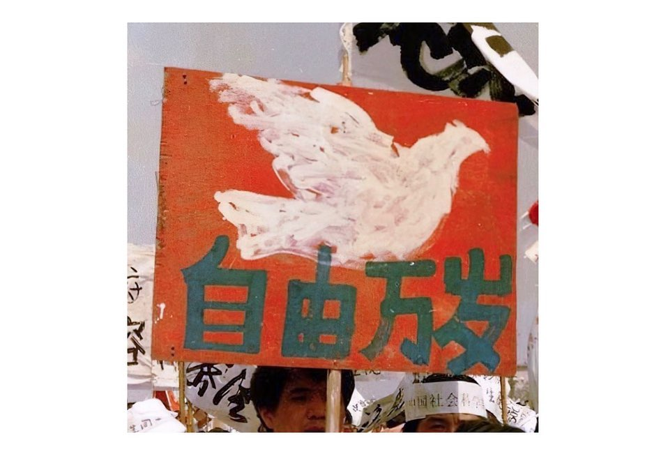</q>
    </q> by staying true to <q class="img_wrapper">
        <span><span id="mission"><a style="text-decoration: none;">the Party&#39;s founding mission</a></span></span>
        <q class="hover_img">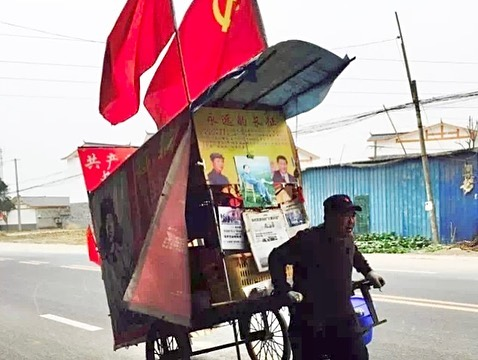</q>
    </q> with greater resolve and purpose on the new journey ahead.<br>
	In responding to <q class="img_wrapper">
    <span><span id="fangcang"><a style="text-decoration: none;">the sudden outbreak of Covid-19</a></span></span>
    <q class="hover_img">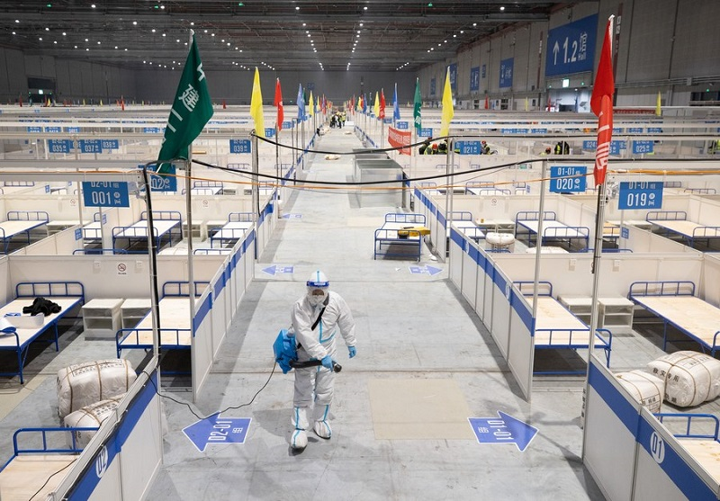</q>
</q>, we put the people and their lives above all else, worked to prevent both imported cases and domestic resurgences, and tenaciously pursued <q class="img_wrapper">
    <span><span id="bus"><a style="text-decoration: none;">a dynamic zero-Covid policy</a></span></span>
    <q class="hover_img">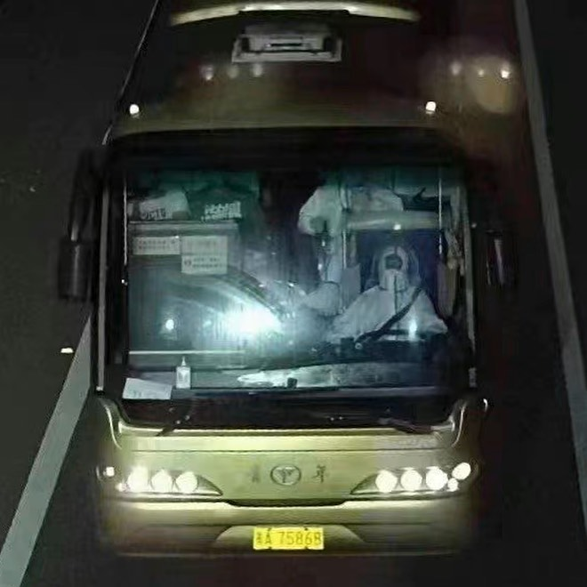</q>
</q>. In launching an all-out people&#39;s war to stop the spread of the virus, 
    we have <q class="img_wrapper">
        <span><span id="covidsafety"><a style="text-decoration: none;">protected the people&#39;s health and safety</a></span></span>
        <q class="hover_img">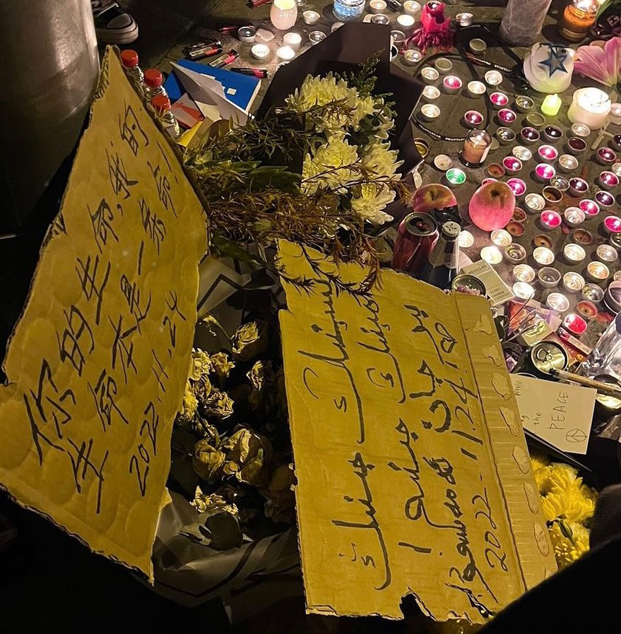</q>
    </q> to the greatest extent possible and made <q class="img_wrapper">
        <span><span id="posters"><a style="text-decoration: none;">tremendously encouraging achievements</a></span></span>
        <q class="hover_img"></q>
    </q> in both epidemic response and economic and social development.<br>
	In the face of <q class="img_wrapper">
    <span><span id="cityoftears"><a style="text-decoration: none;">turbulent developments in hong kong</a></span></span>
    <q class="hover_img">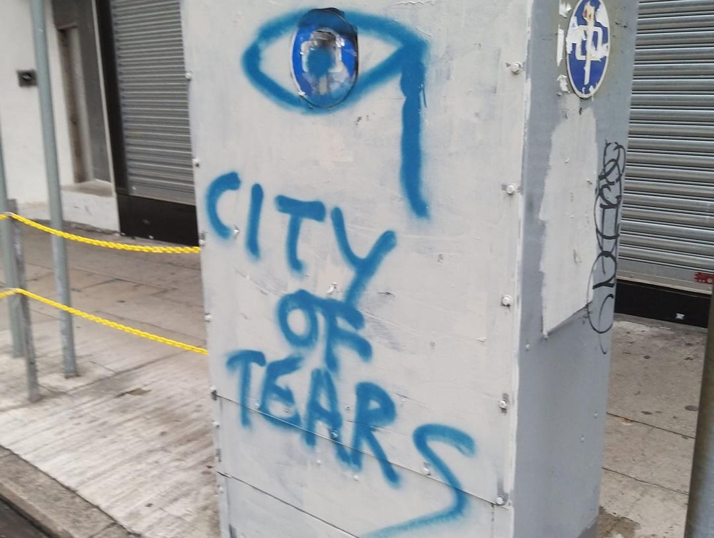</q>
</q>, the central government exercised its overall jurisdiction over the special administrative region as prescribed by China&#39;s Constitution and the Basic Law of the Hong Kong Special Administrative Region. 
<q class="img_wrapper">
    <span><span id="guoanfa"><a href="https://www.elegislation.gov.hk/fwddoc/hk/a406/eng_translation_(a406)_en.pdf" target="_blank" style="text-decoration: none;">The Law on Safeguarding National Security in the Hong Kong Special Administrative Region</a></span></span>
    <q class="hover_img">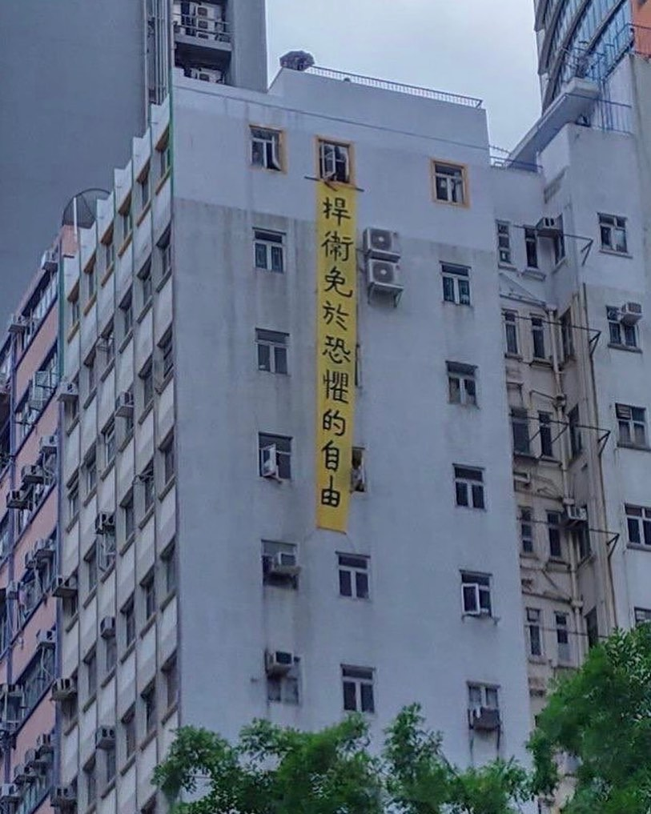</q>
</q> was formulated and put into effect, ensuring that Hong Kong is administered by patriots. Thanks to these moves, order has been restored in Hong Kong, marking a major turn for the better in the region. 
    Further headway has been made in developing the <q class="img_wrapper">
        <span><span id="daqiao"><a style="text-decoration: none;">Guangdong-Hong Kong-Macao Greater Bay Area</a></span></span>
        <q class="hover_img"></q>
    </q>  and supporting Hong Kong and Macao in growing their economies, <q class="img_wrapper">
        <span><span id="chai"><a style="text-decoration: none;">improving living standards</a></span></span>
        <q class="hover_img">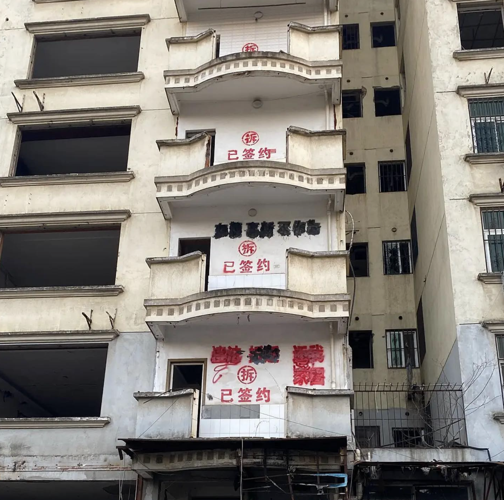</q>
    </q>, and <q class="img_wrapper">
        <span><span id="stability"><a style="text-decoration: none;">maintaining stability</a></span></span>
        <q class="hover_img">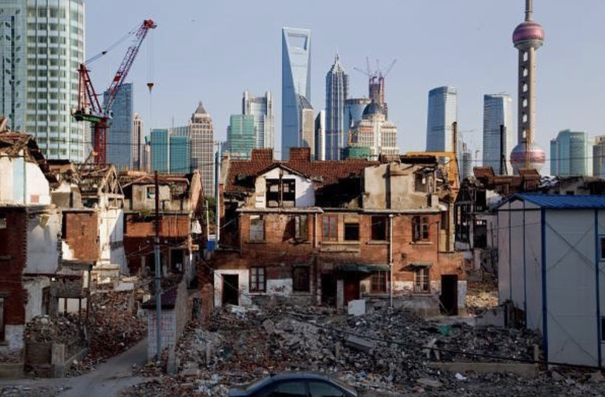</q>
    </q> .<br>
	In response to separatist activities aimed at <q class="img_wrapper">
        <span><span id="onechina"><a style="text-decoration: none;">“Taiwan independence”</a></span></span>
        <q class="hover_img">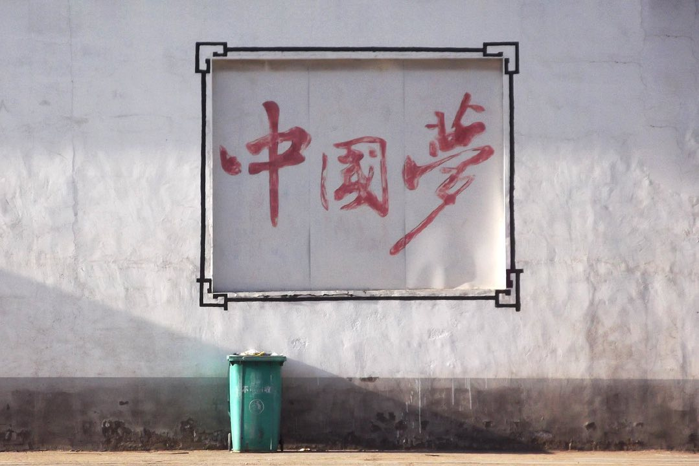</q>
    </q> and gross provocations of <q class="img_wrapper">
        <span><span id="taiwanex"><a style="text-decoration: none;">external interference in Taiwan affair</a></span></span>
        <q class="hover_img">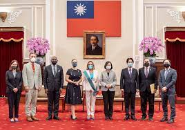</q>
    </q>s, we have resolutely fought against separatism and countered interference, 
    demonstrating our resolve and ability to safeguard <q class="img_wrapper">
        <span><span id="chinate"><a style="text-decoration: none;">China&#39;s sovereignty and territorial integrity</a></span></span>
        <q class="hover_img">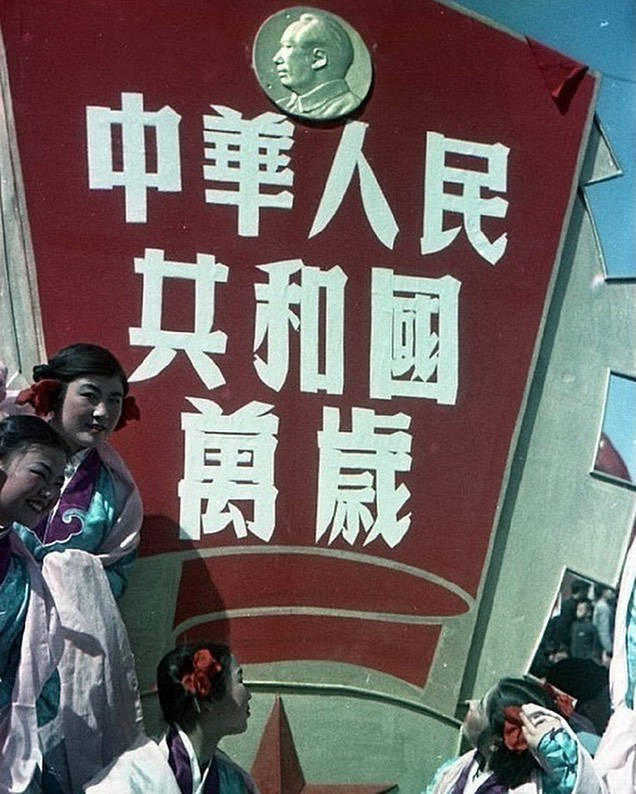</q>
    </q> and to oppose <q class="img_wrapper">
        <span><span id="unification"><a style="text-decoration: none;">“Taiwan independence.”</a></span></span>
        <q class="hover_img">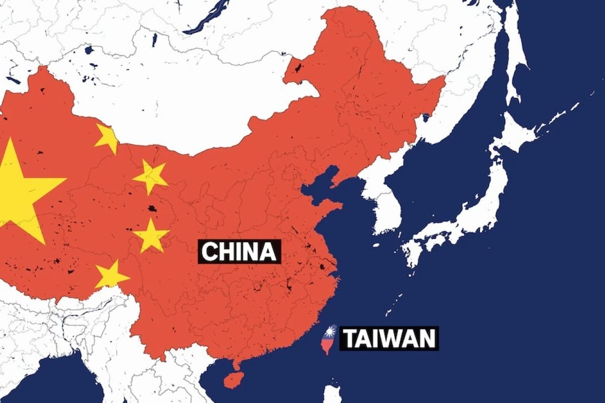</q>
    </q> We have strengthened our strategic initiative for China&#39;s complete reunification and consolidated commitment to the <q class="img_wrapper">
        <span><span id="one-China"><a style="text-decoration: none;">one-China principle</a></span></span>
        <q class="hover_img"></q>
    </q> within the international community.<br>
Confronted with <q class="img_wrapper">
    <span><span id="out"><a style="text-decoration: none;">drastic changes in the international landscape</a></span></span>
    <q class="hover_img"></q>
</q>, especially external attempts to blackmail, contain, blockade, and exert maximum pressure on China, we have put our national interests first, focused on internal political concerns, and maintained firm strategic resolve. 
We have shown <q class="img_wrapper">
    <span><span id="spirit"><a style="text-decoration: none;">a fighting spirit</a></span></span>
    <q class="hover_img"><video controls play src="videos/上海乌鲁木齐中路Residents in Shanghai gathered at Wulumuqi Rd. (M) to commemorate people perished in the deadly fire that broke out in a high-rise residential building on November 24th in Urumqi, Xinjiang. People are tributing t (2).mp4"></q>
</q> and a firm determination to never yield to coercive power. Throughout these endeavors, we have <q class="img_wrapper">
    <span><span id="woaini"><a style="text-decoration: none;">safeguarded China&#39;s dignity and core interests</a></span></span>
    <q class="hover_img"><video controls play src="videos/videoplayback.mp4"></q>
</q> and kept ourselves well-positioned for <q class="img_wrapper">
    <span><span id="peace"><a style="text-decoration: none;">pursuing development</a></span></span>
    <q class="hover_img">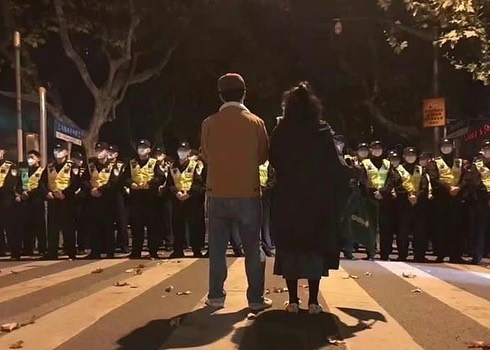</q>
</q>and <q class="img_wrapper">
    <span><span id="ensuresafety"><a style="text-decoration: none;">ensuring security</a></span></span>
    <q class="hover_img"></q>
</q>.<br>
Over the past five years, our Party has rallied the people and led them in solving a great number of problems that had long gone unsolved, securing many accomplishments that hold major future significance, and achieving impressive advances in the cause of the Party and the country.<br>

Comrades,<br>
	Ten years have passed since the Party&#39;s 18th National Congress. 
    The past decade marked three major events of great immediate importance and profound historical significance for the cause of the Party and the people: We embraced the centenary of the Communist Party of China; 
    we ushered in a new era of socialism with Chinese characteristics; and we <q class="img_wrapper">
        <span><span id="fight"><a style="text-decoration: none;">eradicated absolute poverty</a></span></span>
        <q class="hover_img">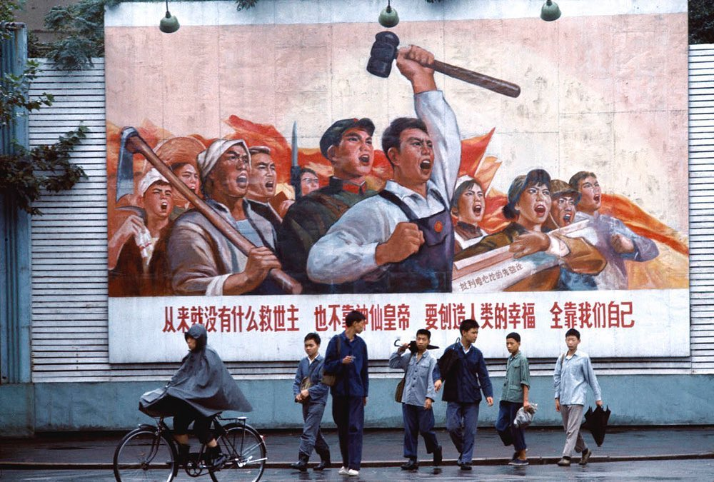</q>
    </q> and finished building <q class="img_wrapper">
        <span><span id="modern"><a style="text-decoration: none;">a moderately prosperous society</a></span></span>
        <q class="hover_img">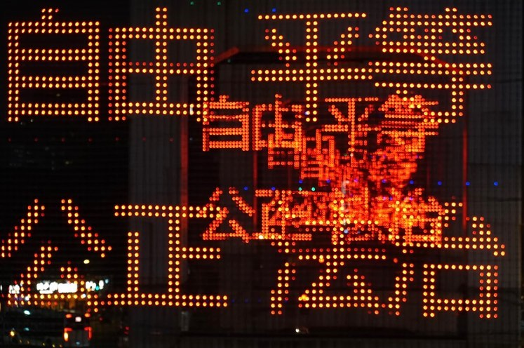</q>
    </q> in all respects, thus completing <q class="img_wrapper">
        <span><span id="goal"><a style="text-decoration: none;">the First Centenary Goal</a></span></span>
        <q class="hover_img">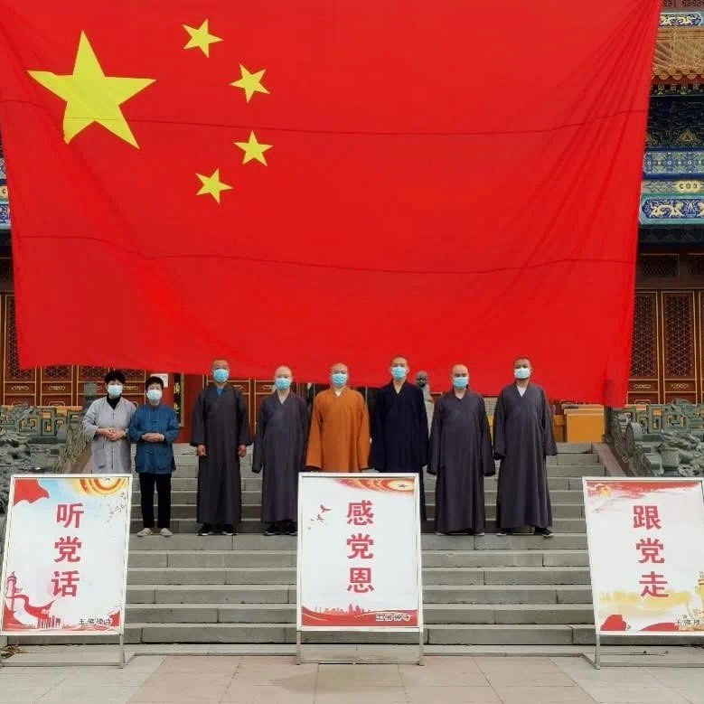</q>
    </q>. 
    These were <q class="img_wrapper">
        <span><span id="historic"><a style="text-decoration: none;">historic feats</a></span></span>
        <q class="hover_img"><video controls play src="videos/historic.mp4"></q>
        </q>—feats accomplished by the Communist Party of China and the Chinese people striving in unity, feats that will be forever recorded in the Chinese nation&#39;s history, and feats that will <q class="img_wrapper">
            <span><span id="world"><a style="text-decoration: none;">profoundly influence the world</a></span></span>
            <q class="hover_img">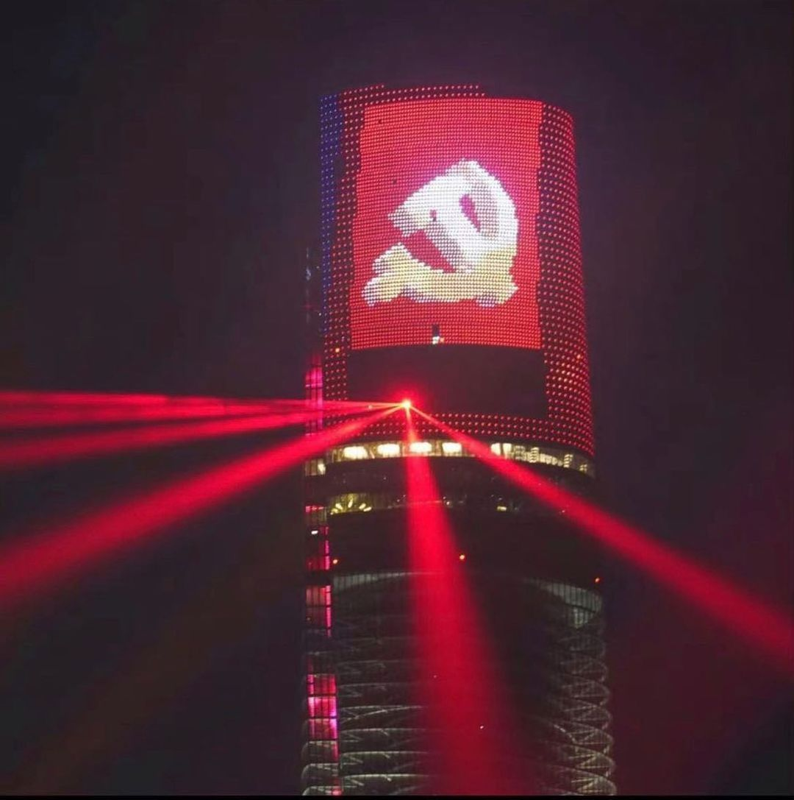</q>
            </q>.
            </p>
        </div>

        <div class="side-bar-right">
            <ul>
                <a href="about.html"target="_blank" style="text-decoration: none;"><li><h2>ABOUT</h2></li></a>
                <a href="https://www.gov.cn/xinwen/2022-10/25/content_5721685.htm"target="_blank" style="text-decoration: none;"><li><h2>FULLTEXT</h2></li></a>
            </ul>
 </div>

    

        <div>
            <footer><a href="about.html" target="_blank" style="text-decoration: none;">Copyright &copy; 2023 WENEVERLIE</a></footer>
        </div>

    </div>

    </body>
</html>